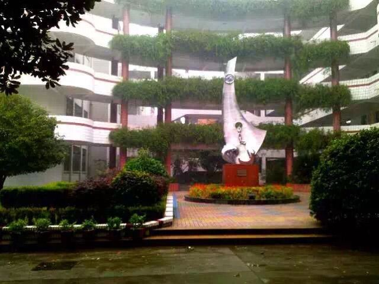
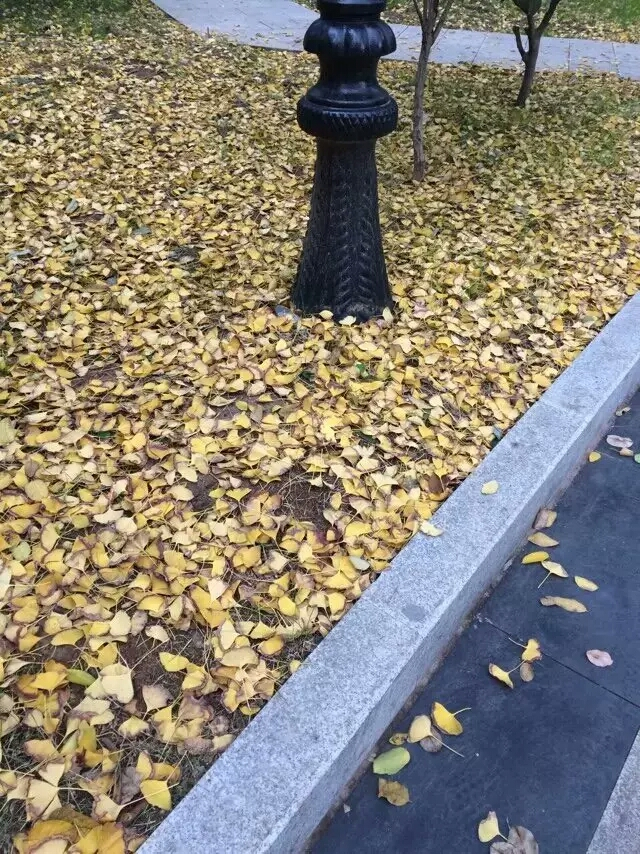
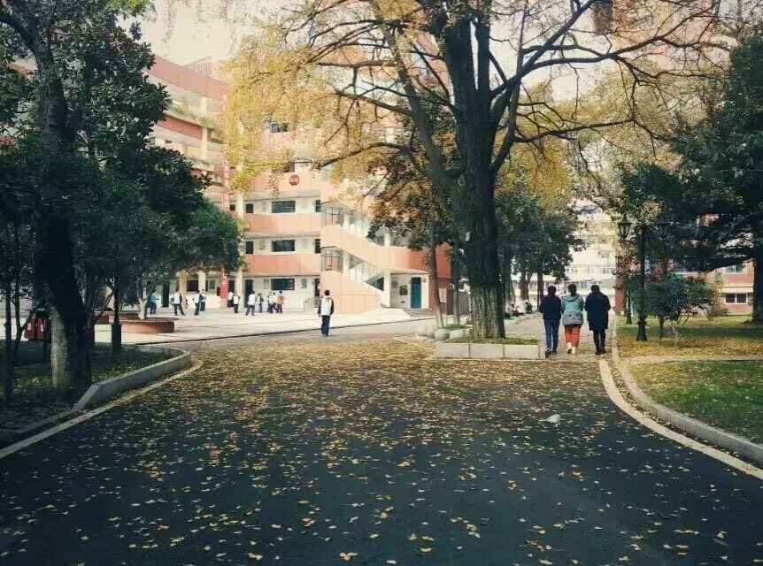
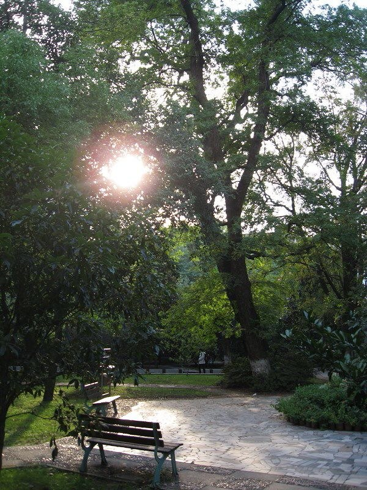
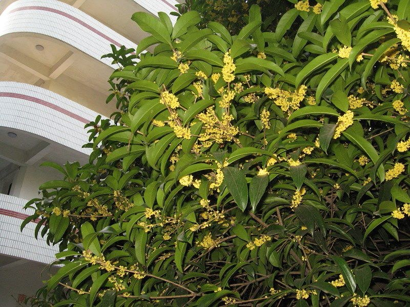
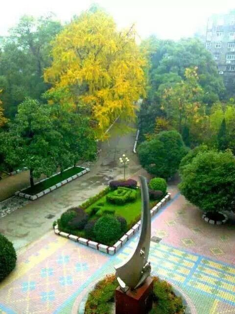

<!DOCTYPE html >
<!--  Website template by freewebsitetemplates.com  -->
<html>

    <head>
        <title>Nostalgias</title>
        <meta http-equiv="Content-Type" content="text/html; charset=UTF-8" />
        <meta name="description" content="" />
        <meta name="keywords" content="" />
        <link href="css/style.css" rel="stylesheet" type="text/css" />
    </head>

    <body >
        <div id="background">
            <div id="page">

                <div class="header">
                    <div class="footer">
                        <div class="body">

                            <div id="sidebar">
                                <a href="index.html"></a>

                                <ul class="navigation">
                                    <li><a href="index.html">Home</a></li>
                                    <li><a href="CV.html" >Curriculum Vitae</a></li>
                                    <li><a href="education.html">Education and Research</a></li> 
                                    <li><a href="TA.html">Teaching Assistant</a></li>                                   
                                    <li><a href="others.html">Miscellaneous</a></li>

                                </ul>
        
                                <div class="connect">
                                    <SCRIPT LANGUAGE = "JavaScript" src="js/lastmodified.js"> </SCRIPT>
                                </div>


                            </div>         
                            <div id="content" >                    
<H1 ><center>Nostalgias in Nanchang No. 10 High School</center></H1>
 <br />
                                    <br />
<h3><center>This is a Forgotten Empire, but unforgettable for me.</center></h3>
<br/>
<!--
    <ul><li>关于在十中的五年岁月，我想我不需要花太多的篇幅叙述我的感情。我在<a href="https://www.zhihu.com/question/29148143/answer/43353997">知乎上的回答</a>已经透露出了我的感情，尽管那个回答显得有些片面。平时总是感慨万千，到提笔之时却又无语凝噎。</li>
    
    <li>一个地方让人一直怀念总归是有原因的。从小到大除了家和十中，也没有第三个地方让我如此难忘。十中少年班是一个将学生当作“真正的学生”来培养的地方，尽管有时候管理的确是过于松散。这里没有压迫式的管理，这里没有蛮横霸道的教师，这里也没有所谓的尔虞我诈。如果有这些脏东西的话，那么把它踢出少年班就行了。例如，少四的时候全班联合弹劾了一位很差劲的生物老师。少年班一切似乎都是十分纯净的，同学们之间的感情也是如此。</li>
<li>
五年的时光太过短暂，许多事情细节的记忆已经模糊，只不过回味起当年的囧事还是会觉得很可笑。那个时候我的心思很简单，也没什么顾虑，即便是面对高考，也是一笑而过，无所谓。毕业的时候总是有一种很奇怪的感觉，自己的内心似乎出现了一些缺失。我想这大概是，我们再也看不到午后的阳光斜射入窗，将栅栏投射在桌上；再也看不到满地黄叶沿着小路，被雨水汇成一条长河，流向校门口那个神奇的窨井盖；再也不会一起聚在八一桥下几个公交车站，有说有笑地回家。
</li>
<li>
大二的时候，十中进行了一次大翻修。虽然还能找回当年的一些痕迹，但关于我们的许多时光可能就只有埋在我们各自的脑海里了。启航雕塑，没了；向上花坛，没了；金鱼池边的拱桥，没了；连屹立了30年的教学楼、综合楼，也被改成了所谓的“西红柿炒蛋”颜色。白砖红瓦的楼房、稀疏开裂的水泥路、略显简陋的桌椅，埋葬了无数十中人的青春。一次放假去看望黄校长，她在十中从普通教师，一直做到副校长，三十三年的一切变化都被她看在眼里，只不过她口中最美好的那段时光，再也无法复现了。
</li>
<li>
不能复现的其实还有过去的辉煌，这也是让老一辈十中人引以为豪、难以忘怀的时代。上世纪八十年代至本世纪初的二三十年里，十中少年班拥有自己的王朝，如今无论是叱咤风云的师大附中，还是苟且残喘的二中，在那个年代，十中少年班对他们而言恐怕是难以望其项背的。碰巧，我的老师几乎都经历过那个王朝，或者说，他们都是那个王朝的缔造者，其中不乏少年班的几位元老级人物，他们从第一届少年班教到了最后一届，见证了一个完整的时代。“南昌十中少年班”，这曾经在南昌响当当、金闪闪的七个大字，早已黯然失色。可辉哥对我们说“你们都是为学校创造辉煌的人，哪怕学校已经无力回天。”
</li>
<li>
离开十中之后，我渐渐意识到辉哥的话是有道理的，在十中这五年收获的不只是所谓的考试成绩，更多地，在十中的生活教会了我去“明辨是非”，教会了我去适应各种环境。即便是遇到困难了，过去的老师和同学们，都愿意伸出援手；自己也有较好的应对能力。
</li>
<li>
2008年，我入学。大概那是少年班刚开始衰败的时间。我们顶着最后的一点点光环，暂且为之续上了一口气。少年班仍然是一股不容忽视的力量，尽管已经不再像过去一样强大。毕业之后，我想我仍然需要继续前进，十中人敢于探索，求真、求实、求新的精神，不可磨灭。
</li>
<li>
<h2>This is a Forgotten Empire, but unforgettable for me.</h2>
</li>
</ul>
-->
<h3>Photos</h3>
<ul>
<li>南昌十中校门</li><a href="nostalgia/gate.jpg"  title="gate"></a>
<li>校门口的雕塑，多少年来仍旧是意气风发。</li><a href="nostalgia/108.jpg"  title="1"></a><a href="nostalgia/109.jpg"  title="2"></a>
<li>启航雕塑，后于2015年的学校装修中移除。</li><a href="nostalgia/sculpture.jpg"  title="sculpture"></a>
<a href="nostalgia/sculpture2.jpg"  title="sculpture2"></a>
<li>建校时就有的纪念碑</li><a href="nostalgia/milestone.jpg"  title="milestone"></a>
<li>校园香径，也是每天上课必经之路</li><a href="nostalgia/101.jpeg"  title="101"></a>
<a href="nostalgia/102.jpg"  title="102"></a>
<a href="nostalgia/103.jpg"  title="103"></a>
<li>南楼旁，每逢初秋，必是丹桂飘香</li><a href="nostalgia/106.jpg"  title="106"></a>
<a href="nostalgia/107.jpg"  title="1076"></a>
<li>参天古树与繁花落锦</li>
<a href="nostalgia/104.jpg"  title="104"></a>
<a href="nostalgia/105.jpg"  title="105"></a>
<li>校园美景（金鱼池、雪景、向上草坪等）</li>
<a href="nostalgia/snow.jpg"  title="snow"></a>
<a href="nostalgia/bridge.jpg"  title="bridge"></a>
<a href="nostalgia/up.jpg"  title="up6"></a>


                                <div class="featured">
                                    <div class="header">
                                        <ul>
                                            <li class="first">
                                            
                                            </li>
                                            <li class="last">
                                            <p>
                                            </p>
                                            </li>
                                        </ul>
                                    </div>
                                    <div class="body">
                                        <br />
                                                                     </div>
                                </div>
                            </div>
                        </div>
                    </div>
  <div class="shadow">
                        <!--访问地图代码-->
                        <script type="text/javascript" src="http://jg.revolvermaps.com/b.js"></script><script type="text/javascript">rmb_ki101('60e1dkbowui','9','99','18',1,'ffffff','010020','aa0000');</script>
                    </div>                </div>    
            </div>    
                      

        </body>
    </html>
